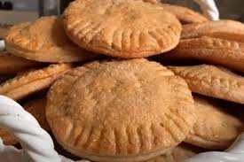
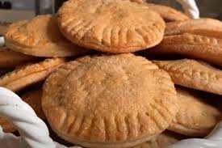

Comidas Tipicas de Sonora
 


Sonora, un estado del norte de México, es famoso por su deliciosa gastronomía. Entre sus comidas típicas destacan la carne asada, preparada con cortes de res asados al carbón y acompañada de cebolla, chile y salsa. Otro platillo tradicional son las coyotas, unos dulces rellenos de piloncillo envueltos en una masa suave y dorada. No pueden faltar las tortillas de harina, grandes y flexibles, ideales para acompañar cualquier comida o hacer burritos. Estas delicias son parte esencial de la identidad sonorense.